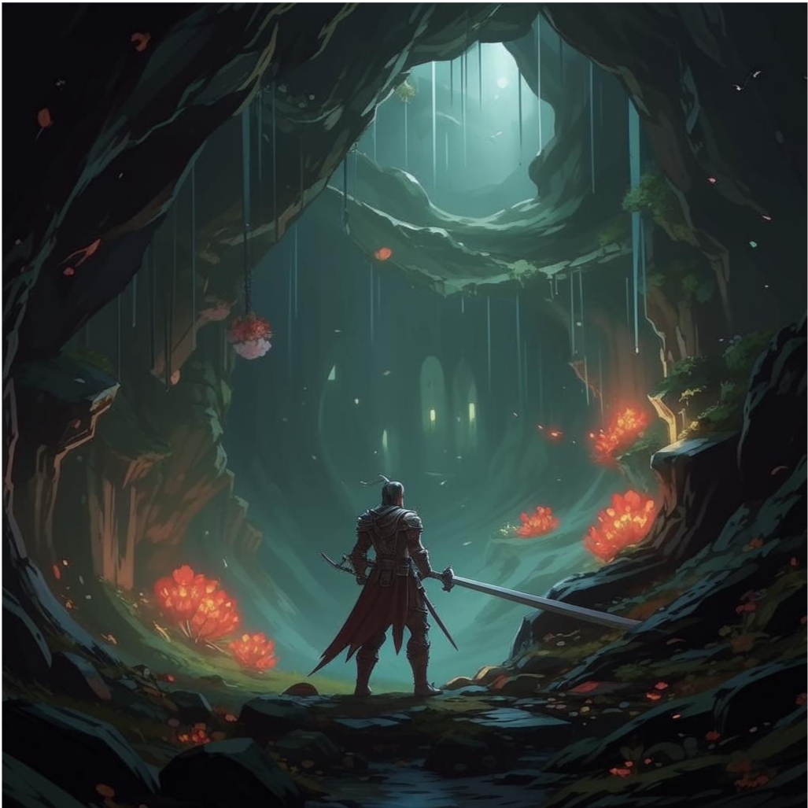
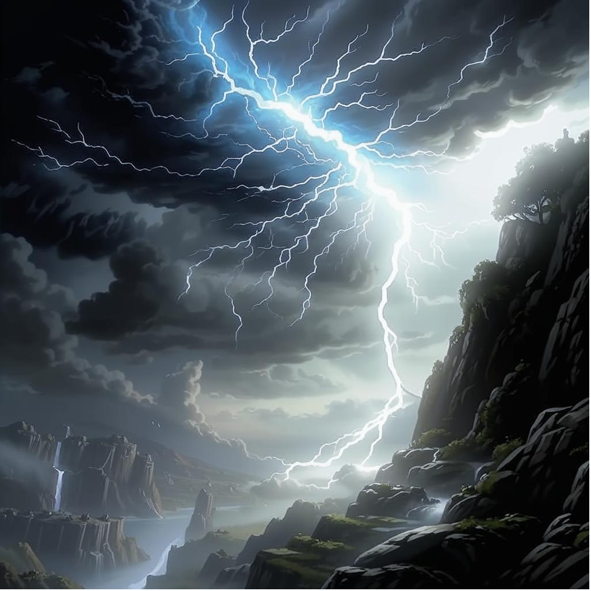

First Section
Title: The Enchanted Isle Quest
Introduction:
Welcome, brave adventurer! Your journey begins on the windswept shores of the Enchanted Isle, a
mysterious land shrouded in legend and magic. Famous for its flourishing flora and elusive fauna, this
isle is rumored to be home to artifacts of untold power, hidden oceans of tranquility, and dark,
forbidding secrets.
Quest Overview:
Your mission, should you choose to accept it, is to uncover the secrets of the Étherstone, a mythical
gem said to absorb the very essence of magic itself. Whispers of its power have drawn many seekers,
leading a lively variety of characters to its hauntingly beautiful shores.
Starting Point: Beach of Whispers
As the sun rises, casting golden rays on the rippling waves, you receive an intriguing invitation from
Ilaria, the wise oracle of the isle. She speaks to you in voice both tender and urgent, her eyes
reflecting the island’s enchanting hues. “The Étherstone will align with the next full moon, creating a
gate to the Dream Realm. To harness its power, you must complete three trials and gather enchanted Astra
Blossoms hidden throughout the isle.
 Trial of the Lost Soul: Journey to the Glooming Cave, where echoes of the past resonate with sorrow. The spirit of an ancient knight has lost his way, and to soothe his restless soul, you must piece together his forgotten story from the whispers of the cave. Once you help him find closure, he will guide you to an Astra Blossom lurking in the shadows.
 Trial of the Tempest: Reach the Cliff of Winds and summon the Storm Elemental, Vortexus, with the prayers of the elementals. Prove your worth by passing his test of courage during a fierce lightning storm. Only if you honor the elementals will you be awarded the final Astra Blossom amid the torrential winds.
Second Section
The Ultimate Convergence:
With all three Astra Blossoms in your possession, return to Ilaria as darkness begins to blanket the
sky. Witness the beauty of the full moon aligning with the Étherstone, unlocking its radiant
luminescence. But beware! The Shadows of Dread, hungering for the stone's magic, will rise to challenge
you in a climactic showdown.